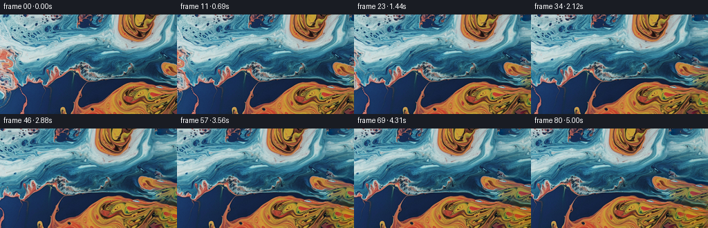
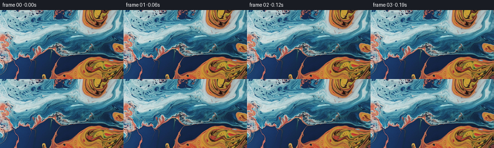

CODING AGENTS AS PIXEL WORLD MODELS
traex/GPT-5.6-Sol · 0002_s0
点击播放 · 原生 RGB 像素
逐轮保存的候选
回放视频、检查图与代码变化。
每份候选均可单独播放。实际图片检查记录在下方工具轨迹中。
候选 01播放与检查图
点击播放 · 原生 RGB 像素


展开代码变化
--- 上一保存版本
+++ 本次保存版本
@@ -0,0 +1,199 @@
+"""Generate a deterministic right-panning continuation of the source frame.
+
+The scene is an abstract macro liquid texture. A small texture-transfer
+panorama is made from overlapping patches of the supplied frame; the video is
+then rendered as sub-pixel crops of that panorama. No external assets or
+learned models are used.
+"""
+
+from pathlib import Path
+
+import cv2
+import numpy as np
+from PIL import Image
+
+import artifact_io
+
+
+CASE_DIR = Path(__file__).resolve().parent
+WIDTH, HEIGHT = 256, 144
+FRAME_COUNT = 81
+PAN_PIXELS = 58.0
+
+
+def _smoothstep(x):
+ x = np.clip(x, 0.0, 1.0)
+ return x * x * (3.0 - 2.0 * x)
+
+
+def _match_score(source, target, block_h, block_w, overlap, have_left, have_top):
+ """Return patch matching costs for all valid full blocks in source."""
+ max_y = HEIGHT - block_h
+ max_x = WIDTH - block_w
+ score = np.zeros((max_y + 1, max_x + 1), np.float32)
+ terms = 0
+
+ # Work in a mildly blurred space as well as RGB. The former follows the
+ # broad blue/orange liquid shapes, while RGB preserves fine reflections.
+ src_f = source.astype(np.float32)
+ src_blur = cv2.GaussianBlur(src_f, (0, 0), 2.2)
+ tgt_blur = cv2.GaussianBlur(target.astype(np.float32), (0, 0), 2.2)
+
+ for src_rep, tgt_rep, weight in (
+ (src_f, target.astype(np.float32), 0.62),
+ (src_blur, tgt_blur, 0.38),
+ ):
+ if have_left:
+ templ = tgt_rep[:block_h, :overlap]
+ raw = cv2.matchTemplate(src_rep, templ, cv2.TM_SQDIFF)
+ score += weight * raw[: max_y + 1, : max_x + 1] / templ.size
+ terms += 1
+ if have_top:
+ templ = tgt_rep[:overlap, :block_w]
+ raw = cv2.matchTemplate(src_rep, templ, cv2.TM_SQDIFF)
+ score += weight * raw[: max_y + 1, : max_x + 1] / templ.size
+ terms += 1
+ return score / max(1, terms)
+
+
+def _colour_fit(candidate, target, known_mask):
+ """Conservatively fit each candidate channel to its overlap."""
+ out = candidate.astype(np.float32).copy()
+ if not np.any(known_mask):
+ return out
+ for c in range(3):
+ x = candidate[..., c][known_mask].astype(np.float32)
+ y = target[..., c][known_mask].astype(np.float32)
+ vx = float(np.var(x))
+ if vx > 36.0:
+ gain = float(np.mean((x - x.mean()) * (y - y.mean())) / vx)
+ gain = np.clip(gain, 0.88, 1.12)
+ else:
+ gain = 1.0
+ offset = np.clip(float(y.mean() - gain * x.mean()), -24.0, 24.0)
+ out[..., c] = out[..., c] * gain + offset
+ return np.clip(out, 0, 255)
+
+
+def make_panorama(source, extra=96):
+ """Quilt a coherent right-hand continuation onto the source image."""
+ rng = np.random.default_rng(72319)
+ full_w = WIDTH + extra
+ block = 48
+ overlap = 16
+ step = block - overlap
+
+ canvas = np.zeros((HEIGHT, full_w, 3), np.float32)
+ canvas[:, :WIDTH] = source
+ filled = np.zeros((HEIGHT, full_w), bool)
+ filled[:, :WIDTH] = True
+
+ x_positions = list(range(WIDTH - overlap, full_w, step))
+ y_positions = list(range(0, HEIGHT, step))
+
+ for y0 in y_positions:
+ bh = min(block, HEIGHT - y0)
+ for x0 in x_positions:
+ bw = min(block, full_w - x0)
+ target = canvas[y0 : y0 + bh, x0 : x0 + bw]
+ known = filled[y0 : y0 + bh, x0 : x0 + bw]
+ have_left = bool(np.all(known[:, : min(overlap, bw)]))
+ have_top = y0 > 0 and bool(np.all(known[: min(overlap, bh)]))
+
+ costs = _match_score(
+ source, target, bh, bw, min(overlap, bh, bw), have_left, have_top
+ )
+
+ # Choose among a few essentially equivalent minima. This avoids
+ # repeatedly copying one conspicuous patch while retaining a very
+ # close boundary match.
+ flat = costs.ravel()
+ count = min(7, flat.size)
+ choices = np.argpartition(flat, count - 1)[:count]
+ ordered = choices[np.argsort(flat[choices])]
+ rank = int(rng.choice(min(4, count), p=np.array([0.55, 0.25, 0.14, 0.06])[: min(4, count)] / np.array([0.55, 0.25, 0.14, 0.06])[: min(4, count)].sum()))
+ sy, sx = np.unravel_index(ordered[rank], costs.shape)
+ patch = source[sy : sy + bh, sx : sx + bw]
+
+ # The colour fit uses only actual overlap pixels.
+ patch = _colour_fit(patch, target, known)
+
+ alpha = np.ones((bh, bw), np.float32)
+ if have_left:
+ ramp = _smoothstep(np.linspace(0.0, 1.0, min(overlap, bw), dtype=np.float32))
+ alpha[:, : len(ramp)] = np.minimum(alpha[:, : len(ramp)], ramp[None, :])
+ if have_top:
+ ramp = _smoothstep(np.linspace(0.0, 1.0, min(overlap, bh), dtype=np.float32))
+ alpha[: len(ramp)] = np.minimum(alpha[: len(ramp)], ramp[:, None])
+
+ # Source-frame pixels must never be touched. Already synthesized
+ # overlap is feathered; new area receives the candidate directly.
+ writable = np.ones((bh, bw), bool)
+ if x0 < WIDTH:
+ writable[:, : min(WIDTH - x0, bw)] = False
+ old = target.copy()
+ mixed = old * (1.0 - alpha[..., None]) + patch * alpha[..., None]
+ target[writable] = mixed[writable]
+ filled[y0 : y0 + bh, x0 : x0 + bw][writable] = True
+
+ # Anchor the synthesized texture exactly to the last source column, with a
+ # rapidly decaying correction. This removes even a one-pixel quilting
+ # join when the world-coordinate seam enters the camera view.
+ extension = canvas[:, WIDTH:]
+ delta = source[:, -1].astype(np.float32) - extension[:, 0]
+ delta_soft = cv2.GaussianBlur(delta[:, None, :], (1, 0), sigmaX=0, sigmaY=1.15)[:, 0]
+ d = np.arange(extra, dtype=np.float32)
+ decay = np.exp(-d / 8.0)[None, :, None]
+ extension += delta_soft[:, None, :] * decay
+ extension[:, 0] = source[:, -1]
+
+ # A very light vertical-only smoothing confined to the far extension
+ # suppresses residual horizontal patch boundaries without reducing the
+ # source texture or the directional detail important for a pan.
+ soft = cv2.GaussianBlur(extension, (1, 3), sigmaX=0, sigmaY=0.55)
+ blend = _smoothstep(np.arange(extra, dtype=np.float32) / 22.0)[None, :, None] * 0.16
+ extension[:] = extension * (1.0 - blend) + soft * blend
+ return np.clip(canvas, 0, 255).astype(np.uint8)
+
+
+def render_frames(source, panorama):
+ frames = np.empty((FRAME_COUNT, HEIGHT, WIDTH, 3), np.uint8)
+ frames[0] = source # Contract: byte/pixel-identical first frame.
+
+ yy, xx = np.mgrid[0:HEIGHT, 0:WIDTH].astype(np.float32)
+ for i in range(1, FRAME_COUNT):
+ t = i / (FRAME_COUNT - 1)
+ # Predominantly constant pan, with only short eased run-in/run-out.
+ edge = 0.08
+ if t < edge:
+ travel = edge * _smoothstep(t / edge)
+ elif t > 1.0 - edge:
+ travel = 1.0 - edge + edge * _smoothstep((t - (1.0 - edge)) / edge)
+ else:
+ travel = t
+ shift = np.float32(PAN_PIXELS * travel)
+ map_x = xx + shift
+ frame = cv2.remap(
+ panorama,
+ map_x,
+ yy,
+ interpolation=cv2.INTER_CUBIC,
+ borderMode=cv2.BORDER_REFLECT_101,
+ )
+ frames[i] = np.clip(frame, 0, 255).astype(np.uint8)
+ return frames
+
+
+def main():
+ source = np.asarray(Image.open(CASE_DIR / "first_frame.png").convert("RGB"), dtype=np.uint8)
+ if source.shape != (HEIGHT, WIDTH, 3):
+ raise ValueError(f"unexpected source shape: {source.shape}")
+ panorama = make_panorama(source)
+ frames = render_frames(source, panorama)
+ assert frames.shape == (81, 144, 256, 3) and frames.dtype == np.uint8
+ assert np.array_equal(frames[0], source)
+ artifact_io.save(frames, CASE_DIR)
+
+
+if __name__ == "__main__":
+ main()
可观测工具轨迹
实际执行的命令与返回图片。
命令 1exit 0
/bin/bash -lc "cat GENERATION_RULES.md && printf '\\n--- PROMPT ---\\n' && cat prompt.txt"
命令 2exit 1
/bin/bash -lc "find . -maxdepth 2 -type f -printf '%p\\n' | sort && printf '\\n--- tools ---\\n' && command -v ffmpeg && command -v ffprobe && command -v python3"
命令 3exit 0
/bin/bash -lc "python3 - <<'PY'
from PIL import Image
im=Image.open('first_frame.png')
print(im.mode, im.size)
print('extrema',im.getextrema())
PY"命令 4exit 0
/bin/bash -lc "cat task_spec.json && printf '\\n--- artifact_io ---\\n' && sed -n '1,240p' artifact_io.py"
命令 5exit 0
/bin/bash -lc "python3 - <<'PY' mods=['numpy','PIL','scipy','cv2','imageio','skimage'] for m in mods: try: x=__import__(m); print(m,'OK',getattr(x,'__version__','')) except Exception as e: print(m,'NO',e) PY"
命令 6exit 0
/bin/bash -lc "python3 - <<'PY'
from PIL import Image
import numpy as np
im=np.array(Image.open('first_frame.png')).astype(float)
h,w,_=im.shape
# tiles average rgb and luma/std, 8 rows x 16 cols
for mode in ('rgb','class'):
print('\\n',mode)
for yy in range(0,h,18):
row=[]
for xx in range(0,w,16):
a=im[yy:min(yy+18,h),xx:min(xx+16,w)]
m=a.mean((0,1))
if mode=='rgb': row.append('%02x%02x%02x'%tuple(np.clip(m,0,255).astype(int)))
else:
# O=warm, B=blue/cyan, D=dark, N=neutral
if m.max()<45: c='D'
elif m[0]>m[2]*1.25 and m[0]>m[1]*1.1:c='O'
elif m[2]>m[0]*1.15 or m[1]>m[0]*1.2:c='B'
else:c='N'
row.append(c)
print(' '.join(row))
# dominant quantized colors
q=(im//16).astype(int)
u,c=np.unique(q.reshape(-1,3),axis=0,return_counts=True)
idx=np.argsort(c)[-20:][::-1]
print('\\ndominant rgb bins')
for i in idx: print((u[i]*16+8).astype(int),c[i],round(c[i]/(h*w),3))
# edge stats and per-col means
for x in range(0,w,16): print('col',x,np.round(im[:,x:x+16].mean((0,1)),1), 'sd',round(im[:,x:x+16].std(),1))
PY"命令 7exit 0
/bin/bash -lc "python3 - <<'PY'
import cv2, numpy as np
from PIL import Image
im=np.array(Image.open('first_frame.png'))
sm=cv2.resize(im,(64,36),interpolation=cv2.INTER_AREA)
# semantic hue+brightness symbols
# HSV OpenCV
hsv=cv2.cvtColor(sm,cv2.COLOR_RGB2HSV)
for y in range(36):
s=''
for x in range(64):
r,g,b=sm[y,x]; h,sa,v=hsv[y,x]
if v<45:c='.'
elif v<75:c=':'
elif sa<30 and v>180:c='W'
elif sa<35:c='n'
elif r>g*1.12 and r>b*1.25:c='O' if v>130 else 'o'
elif b>r*1.2 and g>r*1.1:c='C' if v>130 else 'b'
elif g>r*1.1:c='c'
else:c='N'
s+=c
print(s)
print('\\nLUMA')
chars=' .:-=+*#%@'
gray=cv2.cvtColor(sm,cv2.COLOR_RGB2GRAY)
for row in gray:
print(''.join(chars[min(9,int(v)//26)] for v in row))
PY"命令 8exit 0
/bin/bash -lc 'python3 generate.py'
命令 9exit 0
/bin/bash -lc "python3 - <<'PY'
import numpy as np
from PIL import Image
z=np.load('pixels.npz')['pixels']
print('packed shape/dtype',z.shape,z.dtype)
# decode selected and compare PNG
for i in [0,1,40,80]:
p=z[:,:,i]; a=np.stack([(p>>16)&255,(p>>8)&255,p&255],2).astype('uint8')
b=np.array(Image.open(f'frames/{i:02d}.png'))
print(i,np.array_equal(a,b))
PY
# syntax and inventory
python3 -m py_compile generate.py
find frames -maxdepth 1 -name '*.png' | wc -l"命令 10exit 0
/bin/bash -lc "python3 - <<'PY'
# Reconstruct panorama through module and examine world-space seams/texture stats.
import generate, numpy as np, cv2
from PIL import Image
s=np.array(Image.open('first_frame.png'))
p=generate.make_panorama(s)
print('pano',p.shape)
# gradients at and around source/synth seam: RGB Euclidean mean
for x in range(248,265):
d=np.linalg.norm(p[:,x].astype(float)-p[:,x-1].astype(float),axis=1)
print('edge',x-1,x,'mean',round(d.mean(),2),'p95',round(np.percentile(d,95),2))
# patch boundary neighborhoods
for x in [272,288,304,320,336]:
if x<p.shape[1]:
d=np.abs(p[:,x].astype(float)-p[:,x-1].astype(float))
print('patch-edge',x,'MAE',round(d.mean(),2))
# source versus extension summaries
for name,a in [('source',p[:,:256]),('ext',p[:,256:]),('src-right',p[:,160:256])]:
hsv=cv2.cvtColor(a,cv2.COLOR_RGB2HSV)
warm=((a[:,:,0]>a[:,:,2]*1.25)&(a[:,:,0]>a[:,:,1]*1.1)).mean()
blue=((a[:,:,2]>a[:,:,0]*1.15)|(a[:,:,1]>a[:,:,0]*1.2)).mean()
print(name,'mean',np.round(a.mean((0,1)),1),'std',round(a.std(),1),'sat',round(hsv[:,:,1].mean(),1),'warm',round(warm,3),'blue',round(blue,3))
PY"命令 11exit 0
/bin/bash -lc "python3 - <<'PY'
from pathlib import Path
import numpy as np
from PIL import Image
src=np.array(Image.open('first_frame.png'))
fs=np.stack([np.array(Image.open(f'frames/{i:02d}.png')) for i in range(81)])
print('shape/dtype',fs.shape,fs.dtype)
print('first exact',np.array_equal(src,fs[0]),'maxerr',np.abs(src.astype(int)-fs[0]).max())
print('files',Path('pixels.npz').stat().st_size,Path('index.html').stat().st_size)
# Adjacent frame MAE / 99 pct, early, middle, late
for i in [1,2,3,4,5,6,7,8,20,40,60,74,75,76,77,78,79,80]:
d=np.abs(fs[i].astype(np.int16)-fs[i-1].astype(np.int16))
print(f'delta {i-1:02d}-{i:02d}: mae={d.mean():.3f} p99={np.percentile(d,99):.1f} changed={(d.max(2)>0).mean():.3f}')
# exact horizontal registration estimate to initial in overlap (integer shifts)
for i in [8,20,40,60,80]:
scores=[]
for s in range(0,70):
if s>=256: continue
a=fs[i,:,:256-s].astype(float); b=src[:,s:].astype(float)
scores.append(np.mean(abs(a-b)))
print('frame',i,'best integer shift camera/world',np.argmin(scores),'MAE',round(min(scores),3))
PY"命令 12exit 0
/bin/bash -lc 'set -e
before=$(sha256sum pixels.npz | awk '"'{print "'$1}'"')
python3 generate.py
after="'$(sha256sum pixels.npz | awk '"'{print "'$1}'"')
python3 - <<'PY'
from pathlib import Path
import json, numpy as np
from PIL import Image
spec=json.loads(Path('task_spec.json').read_text())
files=sorted(Path('frames').glob('*.png'))
assert len(files)==spec['frames']==81
for f in files:
im=Image.open(f)
assert im.mode=='RGB' and im.size==(spec['width'],spec['height'])
z=np.load('pixels.npz')['pixels']
assert z.shape==(144,256,81) and z.dtype==np.uint32
assert np.array_equal(np.array(Image.open('frames/00.png')),np.array(Image.open('first_frame.png')))
print('FINAL_VALIDATION_OK',len(files),'RGB frames',f\"{spec['width']}x{spec['height']}\",spec['fps'],'fps')
PY
printf 'deterministic=%s\\nsha256=%s\\n' \""'$([ "$before" = "$after" ] && echo true || echo false)" "$after"'保存候选 1 份；完成命令 12 次；可验证图片返回 0 张。原始 API 响应与完整日志保留在本地。